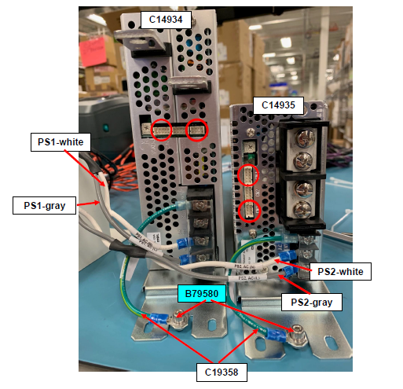
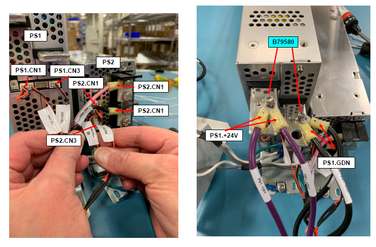
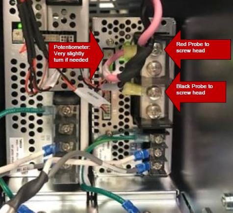
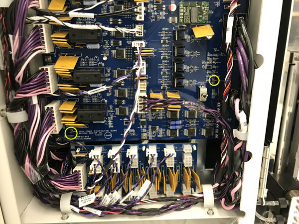

Replacing the 58V Power Supply
This topic includes information about how to replace the 58V power supply.
Safety Reminder
Servicing the DxI 9000 instrument involves potential risks for pinch and puncture, electrical shock, and exposure to hazardous materials. You must mitigate these risks by taking appropriate countermeasures. See Safety for more information.
| Table of Contents |
|---|
| Recommended Tools |
| Removing the 58V Power Supply |
| Installing the 58V Power Supply |
| Testing Battery Voltage |
| Verification |
Recommended Tools
- 3mm hex driver (for M4 screws)
- Large size Phillips-head screwdriver
- Multimeter to check voltage
- Parafilm to assist with screw removal/replacing
Removing the 58V Power Supply
Perform this procedure to remove the 58V Power Supply.
- Turn off the instrument. See Turning Off the Instrument for more information.
- Remove the back panel by loosening the 3 (3mm) screws that fasten it to the chassis.
- Facing the rear of the instrument, remove the three screws (3mm driver) securing the lower right chassis cover and remove the cover to gain access to the power supply as well as the screw (3mm) near the bottom of the panel.
- Disconnect the cooling fan in front of the power supply and remove the two screws (3mm driver) securing the fan in place. Remove the fan.
- Remove both top and bottom plastic covers shielding the connections on the back of the power supply.
- Loosen the five phillips-head screws securing power cables and remove the cables as shown in the photo below:
- PS2.CN1 (Pink) #3 phillips head
- PS2.CN1 (Black) #3 phillips head
- PS2 White
- PS2 Grey
- C19358
Note: Be sure to also disconnect the jumpers from CN1 and CN3 positions as marked with red circles below.

Note: Some of the cables have half moon washers - others have full 360 degree washers that require full removal of the Phillips head screw in order to remove the cable. - Remove the two screws (3mm driver) securing the power supply mounting bracket to the instrument chassis.
- Remove the power supply and mounting bracket.
- Remove the four screws (3mm driver) securing the bracket to the power supply.
- Remove the bracket.
Installing the 58V Power Supply
Perform this procedure to install the 58V power supply.
- Install the mounting bracket onto the power supply and secure with four screws (3mm driver).
- Insert the power supply and mounting bracket into the instrument, and secure in place with two screws (3mm driver).
- Connect the cables with the white connectors to the back of the power supply.
- Connect the five cables to the phillips-head screws and secure them in place by tightening the screws.
Note: Some of the cables have half moon washers - others have full 360 degree washers.
See photos above for reference:
- PS2.CN1 (Pink) #3 phillips head
- PS2.CN1 (Black) #3 phillips head
- PS2 White
- PS2 Grey
- C19358
Note: Be sure to also reconnect the jumpers from both CN1 and CN3 positions as marked with red circles in the photos above. - Using a Multimeter, measure the voltage of the power supply to ensure it is between 58.4 – 58.6V.
- If the voltage of the power supply is not withing the range, adjust the potentiometer VERY slightly with a nonconductive screwdriver until it is within this range. See photo below for reference.

- Reattach both top and bottom plastic covers shielding the connections on the back of the power supply.
- Install the fan, securing it with the two (3mm driver) and reconnect the power to the fan.
- Reattach the cover to the lower right chassis using the four screws (3mm driver).
- Reattach the back panel by tightening the QTY 3 (3mm) screws that fasten it to the chassis, and replace lower 4th screw.
- Connect the power supply.
- Turn on the instrument. See Turning On the Instrument for more information.
Testing Battery Voltage
Simultaneously take the black lead from the multimeter and place it on the GND electrical test point, and place the red lead from the multimeter on the 58V electrical test point as illustrated below with the yellow circles:

The Multimeter will display the battery voltage.
Verification
Complete the verification of service repair. See Verification of Service Repairs for more information.